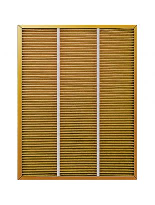

Фильтр G&D AS ACGD 3005 FP
Уникальная разработка для гарантии здоровья вашей семьи.
G&D (Gas and Dust filter)
Большинство систем фильтрации задерживает только пыль, высвобождая при этом сернистый газ, который притягивается пылью. Сернистый газ приводит к насморку, кашлю, головным болям, головокружению и тошноте. Новый специальный G&D фильтр, разработанный компанией BORK, не только очищает воздух от мельчайших частиц пыли, но и эффективно адсорбирует сернистый газ. Фильтр G&D выполнен из высокотехнологичного материала Zeolite, который с помощью нано-пор эффективно поглощает вредные газы. Данный материал был создан на основе цеолитов – минералов, способных селективно поглощать различные вещества. В промышленности применяют исключительно искусственно синтезированные цеолиты, они находят широкое применение в водоочистительных приборах, как адсорбенты, ионообменники, молекулярные сита.
В результате из воздуха удаляется не только пыль, но и молекулы газа, которые притянуты положительным зарядом пыли.
Надежная защита
Новый специальный фильтр эффективно очищает воздух от пыли и абсорбирует сернистый газ, который может вызывать насморк, кашель, головные боли, головокружение и тошноту. Система предназначена для эффективной работы в воздухоочистителях A500, A501, A700, A704 и A800 в течение 6 месяцев.